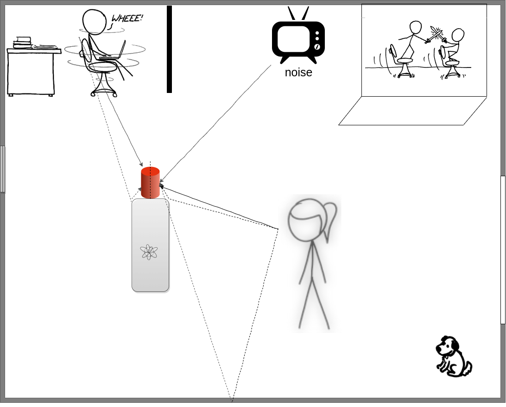

Ph.D Defense, Inria Nancy - Grand Est
Localization Guided Speech Separation

Sunit SIVASANKARAN
04 September, 2020
Supervisors : Emmanuel VINCENT, Inria Nancy - Grant Est, France Dominique FOHR, CNRS, France
Problem overview

Mixture Target
- Stick figures credit: www.xkcd.com
Distant-microphone voice command
- Three main adversaries $\rightarrow~~~ $ Reverberation
- Impact automatic speech recognition (ASR) performance
- Multiple evaluation campaigns $\rightarrow~~~ $ REVERB, CHiME series
$\rightarrow~~~ $ Noise
$\rightarrow~~~ $ Interfering speech
ANR VocADom pipeline


Overview of the talk and contributions of the thesis
Part I: Speaker localization
- Localize the target speaker $\rightarrow~~~ $ Use the wake-up word to discriminate the target speaker against interfering speakers
Part II: Speech extraction & separation
- Recover speech signals from a reverberant, noisy, multi-speaker recording $\rightarrow~~~ $ Analyze the impact of localization errors on speech extraction $\rightarrow~~~ $ Speech separation using iterative strategy
Part III: Explaining neural network outputs
- Are some noises better than others to train a neural network for speech enhancement - better network output? $\rightarrow~~~ $ Use feature attribution methods to explain different model outputs
Part I: Speaker Localization
Signal mixing model
$$
\mathbf{c}_j(t) = \mathbf{a}_j \star s_j(t),\quad
$$
$\mathbf{a}_j(\tau)$ is the room impulse response

$
\begin{aligned}
\mathbf{x}(t) &= [x_1(t), ..., x_I(t)]^T \\
&= \sum_{j=1}^{J} \mathbf{c}_j(t) + \textbf{noise}
\end{aligned}
$
$J$ speakers and $I$ microphones
DOA estimation
$\theta_j \rightarrow$ Direction-of-arrival (DOA)
Number of microphones, $I=2$
Approaches to speaker localization
Operate in the time-frequency domain via the short-time Fourier transform (STFT)
Use interchannel time and level difference cues
Signal processing methods
- Angular spectrum-based approaches $\rightarrow~~~ $ GCC-PHAT, SRP-PHAT
- Clustering methods $\rightarrow~~~ $ Iteratively estimate mask & DOA
- Subspace methods $\rightarrow~~~ $ MUSIC
Learning-based methods
- Pre-DNN based methods $\rightarrow~~~ $ GMM, SVM
- DNN-based models $\rightarrow~~~ $ CNN, CRNN
Generalized Cross Correlation with PHAse Transform (GCC-PHAT)
Compute the weighted cross-correlation between signals at two microphones
- Knapp, C. and Carter, G. (1976) The generalized correlation method for estimation of time delay. TASSP
Generalized Cross Correlation with PHAse Transform (GCC-PHAT)
Compute the weighted cross-correlation between signals at two microphones
- Knapp, C. and Carter, G. (1976) The generalized correlation method for estimation of time delay. TASSP
Linear transformation of cosine-sine interchannel phase difference (CSIPD) features
Generalized Cross Correlation with PHAse Transform (GCC-PHAT) with 2-speakers
Contribution to speaker localization
Want to localize the speaker who uttered the keyword $\rightarrow$ New Task
With respect to other work
- Localize one particular speaker in a mixture, not all
- Interested in the speaker who uttered the wake-up word
Challenges
- Localization is computed using cues derived from multichannel signals $\rightarrow~~~ $ what has text got to do with it?
- Sunit Sivasankaran, Emmanuel Vincent, Dominique Fohr. Keyword-based speaker localization: Localizing a target speaker in a multi-speaker environment. In Interspeech, Sep 2018, Hyderabad, India.
Idea
Exploit time-frequency bins dominated by the target speaker only
Mixture spectrogram
Mask for target speaker, $\mathcal{M}$
Proposed approach

STEP 1: Wake-up word detection
STEP 2: Obtain the corresponding spectrogram, a.k.a. phone spectrum
STEP 3: Estimate target mask
STEP 4: CSIPD $\times$ target mask ⇒ [DNN] ⇒ DOA
STEP 1: Wake-up word detection
- Keyword and alignment found by wake-up word detection system
- Hidden Markov Model-Gaussian Mixture Model system used in this work
STEP 2: Phone spectra database

- Pre-computed by averaging magnitude spectra per phone
- Distinct patterns are observed for every phone
- Pick spectrum corresponding to the aligned phone
- Erdogan, H., Hershey, J. R., Watanabe, S., and Le Roux, J. (2015). Phase-sensitive and recognition-boosted speech separation using deep recurrent neural networks. In ICASSP
Step 3: Target mask
A DNN trained in a supervised fashion is used to estimate the mask
Types of mask
Based on utility and estimation difficulty
- Clean target mask, $\mathcal{M}^D$
- Early target mask, $\mathcal{M}^E$
- Reverberated target mask, $\mathcal{M}^R$
Computing ground-truth masks
Remove component & compute ratio
Estimating target masks
Outputs: Desired and estimated masks
STEP 4: DOA estimation network
Data for training
Generating Room Impulse Responses (RIR)
- Discretize DOA space into $1^\circ$ classes⇒$181$ classes
- RT60 $\in [0.3, 1.0]$ s, speaker mic distance $\in [0.5 - 5.5]$ m
- Distance between microphones = $10$ cm
- $1.5$ million RIRs for training
- RIRs simulated using RIR-Simulator
- Habets, E.A.P. "Room impulse response (RIR) generator." https://github.com/ehabets/RIR-Generator
Features
- Speech signals from Librispeech
- $0.5$ s segments of speech are used for localization
- Signal-to-interference ratio (SIR) $[0, 10]$ dB
- Real ambient noise for test at signal-to-noise ratio (SNR) $[0, 30]$ dB
Results on simulated data
Gross Error Rate:
% of estimated DOAs above ($>5^\circ$) error tolerance
Interference Closeness Rate:
% of estimated DOAs close to the interfering speaker
- Target mask helps to identify the target
- Estimated mask has low interference closeness rate
- Early mask gave the best performance
Other experiments
On simulated data
- Frame localization: Localization on speech segments containing a single phoneme
-
Observations: Fricative phones are better for localization and plosive are the worst
Phone CH Z SH NG N M B Gross error rate 1.5 1.8 1.8 19.4 21.1 21.3 24.5 An ideal keyword: Cheeeezzzzz!
- Impact of inaccurate keyword alignment
On real data
- Recorded real data at Inria
- 40% improvement in gross error rate at 0dB SIR, lesser impact at low and high SIR
-
Thanks to - Élodie Gauthier, Manuel Pariente, Nicolas Furnon, Nicolas Turpault and Emmanuel Vincent - for helping out with the recording!
Part II: Speech Separation
Approaches to speech separation
- Single-channel approaches $\rightarrow~~~ $ Non-negative matrix factorization $\rightarrow~~~ $ DNN-based methods in time-frequency domain
- Hershey, J. R., Chen, Z., Le Roux, J., and Watanabe, S. (2016). Deep clustering: Discriminative embeddings for segmentation and separation. In ICASSP
- Luo, Y. and Mesgarani, N. (2019). Conv-TasNet: Surpassing ideal time-frequency magnitude masking for speech separation. TASLP
- Multichannel speech separation $\rightarrow~~~ $ Mask-based beamformers $\rightarrow~~~ $ Using phase difference along with magnitude spectra with deep clustering $\rightarrow~~~ $ Explicit use of speaker location : TDOA/DOA
- Perotin, L., Serizel, R., Vincent, E., and Guérin, A. (2018). Multichannel speech separation with recurrent neural networks from high-order ambisonics recordings. In ICASSP
- Chen, Z., Xiao, X., Yoshioka, T., Erdogan, H., Li, J., and Gong, Y. (2018). Multi-Channel overlapped speech recognition with location guided speech extraction network. In SLT
Contributions to speech separation
Use of localization information for speech extraction
- Study the impact of localization errors $\rightarrow~~~ $ Can large angular distance between speakers compensate for low SIR? $\rightarrow~~~ $ Evaluate ASR performances using true speaker location information
Deflation strategy for speech separation
- Make speech separation network robust to localization errors $\rightarrow~~~ $ Estimate speakers iteratively
- Sunit Sivasankaran, Emmanuel Vincent, Dominique Fohr. Analyzing the impact of speaker localization errors on speech separation for automatic speech recognition. In 28th European Signal Processing Conference, Jan 2021, Amsterdam, The Netherlands. (Accepted)
- Sunit Sivasankaran, Emmanuel Vincent, Dominique Fohr. SLOGD: speaker location guided deflation approach to speech separation. In 45th IEEE International Conference on Acoustics, Speech, and Signal Processing, May 2020, Barcelona, Spain.
Speech extraction given direction-of-arrival information
Step 1: Delay-and-Sum (DS) beamforming using the estimated DOA
Step 2: Estimate a mask corresponding to the target using
- Magnitude spectra of the beamformed signal
- CSIPD of the beamformed signal with respect to a reference microphone
Step 3: Apply data-dependent beamformer to extract target speech
Delay-and-Sum (DS) beamforming on phase difference
- Phase difference at bins dominated by source is zero after DS beamforming
- Reduces the dimension from $I \times (I-1) \times F \rightarrow 2 \times F$ phase features
- No dependency on the array geometry after DS beamforming
Dataset
- WSJ0-2MIX dataset $\rightarrow~~~ $ 100% overlap (min version) $| $ No noise and reverberation $ |$ Single Channel
- WHAM! $\rightarrow~~~ $ Based on WSJ0-2MIX $|$ Real ambient noise $|$ Single Channel
- Multichannel WSJ0-2MIX $\rightarrow~~~ $ Real and Simulated RIRs $|$ No noise $|$ 8 Channels
- Created new dataset: Kinect-WSJ $\rightarrow~~~ $ Based on max version of WSJ0-2MIX : No 100% overlap $\rightarrow~~~ $ 4 channels with Microsoft Kinect like array geometry $\rightarrow~~~ $ Real ambient multichannel noise from CHiME-5 dataset $\rightarrow~~~ $ Angular distance between speakers $>5^\circ$ $\rightarrow~~~ $ Designed to study impact of localization on speech separation
- https://github.com/sunits/Reverberated_WSJ_2MIX
Results
Demo
Simulated Data (2 speakers + noise)
| Mixture | Proposed | Conv-Tasnet | |||
|---|---|---|---|---|---|
| $\mathbf{x}$ | $\hat{\mathbf{c}}_1$ | $\hat{\mathbf{c}}_2$ | $\hat{\mathbf{c}}_1$ | $\hat{\mathbf{c}}_2$ | |
| Male-Male | |||||
| Female-Female | |||||
Real Data
| Mixture | |
| Estimated Target |
Different microphone array geometry compared to simulated data
Robustness to DOA estimation errors
- Speech extraction performance drops due to localization errors
- Iteratively estimate sources using deflation strategy $\rightarrow~~~ $ Remove dominant speaker first and then estimate another speaker
- Kinoshita, K., Drude, L., Delcroix, M., and Nakatani, T. (2018). Listening to each speaker one by one with recurrent selective hearing networks. In ICASSP
Speaker LOcalization Guided Deflation (SLOGD)
Estimation of the dominant speaker

$$
\mathcal{L}_{\text{DOA}_1} = \min_{i} - \sum_{p=1}^{P}\log\Big(\frac{1}{N}\sum_{n} \mathrm{p}_1(n, \theta)\Big) \mathbb{I}_{\theta_{i}}(p)
$$
$\mathbb{I}_{\theta_i}(p)$ is the Indicator variable
Speaker LOcalization Guided Deflation (SLOGD)
Estimation of the second speaker

- Remove the dominant speaker from the mixture
- Estimate the DOA and mask of the non-dominant speaker
- Use a data-dependent beamformer to extract sources from masks
Results in word error rate (WER) %
Before separation baseline: $66.5\%$
After separation
| Using DOA | Adapting to DOA errors |
||||
|---|---|---|---|---|---|
| Errors on DOA |
|||||
| True DOA | GCC-PHAT | $5 ^{\circ}$ | $10^{\circ}$ | $15^{\circ}$ | SLOGD |
| 35.0 | 54.5 | 55.9 | 73.6 | 75.6 | 44.2 |
Conv-TasNet: $53.2\%$
- Yi.L and Mesgarani.N. "Conv-tasnet: Surpassing ideal time–frequency magnitude masking for speech separation." IEEE/ACM transactions on audio, speech, and language processing, 2019
Part III: Explaining Neural Network Output
Motivation
- Neural networks are black boxes $\rightarrow~~~ $ Gives impressive performances in multiple tasks $\rightarrow~~~ $ Hard to understand reasons for network output
- Different ASR results with enhancement models trained using different noises $\rightarrow~~~ $ On CHiME-4 real evaluation dataset $\rightarrow~~~ $ How does noise influence the network? $\rightarrow~~~ $ Explain the generalization capability of speech enhancement models
Feature attribution methods
- Assign importance to each dimension of the input
- For image classification tasks, show which pixels a DNN is looking at
Feature attribution methods
Gradient-based
Gradient of the output with respect to the input- Saliency map
- Smooth Grads
Gradients $\times$ Input
Leverage the magnitude and sign of input along with gradients- Integrated Gradients
- Layerwise relevance propagation
- DeepLift
- Deep SHapley Additive Explanations (DeepSHAP)
Contributions to explaining neural network outputs
- Use DeepSHAP to provide importance values for each time-frequency bin
- DeepSHAP for regression instead of classification
- Derive an objective scalar metric called speech relevance score to quantify feature attributions
- Use speech relevance score to explain generalization of speech enhancement models
Computing SHAP values for speech enhancement models
- For every $\hat{\mathcal{M}}(n,f)$ compute attributions,$\mathbf{\Phi}^{\text{TF}}(n,f)$, for $|x_1(n',f')| \quad \forall n',f'$
- Reduce the number of attributions by computing: $ \mathbf{\Phi}^{\text{T}}(n) = \sum_f \mathbf{\Phi}^{\text{TF}}(n,f) $

Speech relevance score
Generalizable model should make decisions based on speech and not noise bins
$$
\begin{aligned}
\eta &= \frac{\sum_{n\in\text{speech}}\#\{\mathbf{\Phi}_{>T\text{+IBM}}(n)\}}{\sum_{n\in\text{speech}}\#\{\mathbf{\Phi}_{>T}(n)\}} \\
\text{IBM} &\rightarrow \text{Ideal binary mask}
\end{aligned}
$$

Experimental setup
Noises
CHiME: Noise from CHiME-4 dataset (CHIME) Speech-shaped noise (SSN) Network Sound Effects (NET_SOUND)- https://www.sound-ideas.com/Product/199/Network-Sound-Effects-Library
Speech enhancement model
- 2 Layers of Bi-LSTM
- Speech from simulated part of CHiME-4
- Trained to output a mask
Results: Speech relevance scores
Speech relevance scores on simulated dev set of CHiME-4
| Speech enhancement model | $\mathcal{F}_\text{CHIME}$ | $\mathcal{F}_\text{SSN}$ | $\mathcal{F}_\text{NET\_SOUND}$ |
| WER Real test set (%) | 11.7 | 14.0 | 15.1 |
| WER Simulated dev set (%) | 6.7 | 7.3 | 7.7 |
| Speech relevance score,$\eta$ (%) | 94.8 | 89.6 | 90.3 |
- Baseline WER without enhancement on real test: 25.9%
- Better performance of $\mathcal{F}_\text{CHIME}$ is due to better $\eta$ value
- WER and $\eta$ for $\mathcal{F}_\text{SSN}$ and $\mathcal{F}_\text{NET\_SOUND}$ are similar
Results: Generalization capability
Experiment
$\rightarrow~~~ $ Train: Train speech set + matched noise | Test: Train speech set + CHiME noise $\rightarrow~~~ $ Train and Test have same speech signals but different noisesSpeech relevance scores (%)
| Speech enhancement model | $\mathcal{F}_\text{SSN}$ | $\mathcal{F}_\text{NET\_SOUND}$ | $\mathcal{F}_\text{CHIME}$ |
| Train [Clean speech + matched noise] | 81.7 | 82.5 | 81.7 |
| Test [Clean speech + CHIME noise] | 74.4 | 58.6 | - |
| Difference | 07.3 | 23.9 | - |
- $\mathcal{F}_\text{SSN}$ has better generalization capability than $\mathcal{F}_\text{NET\_SOUND}$
Conclusion
Summary of the thesis
Speaker localization
- Localize the target speaker who uttered a known text such as the wake-up word
- Masks were found to be effective target identifiers
- Use of spoken text decreased the gross error rate$(>5^{\circ})$ by 72%
Speech separation
- Analyzed performance of speech extraction given true speaker location
- Proposed a deflation approach to separate speech using estimated speaker location
- Proposed method was shown to outperform Conv-TasNet by 17% WER
Summary of the thesis
Explaining neural network model output
- Methods to explain the inner working of DNN-based speech enhancement models
- Feature attribution method called DeepSHAP was used
- Proposed metric to evaluate feature attribution
- Low speech relevance score difference of 7.3% with SSN noise compared to 23.9% with Network noise shows better generalization of $\mathcal{F}_\text{SSN}$
Future works
Speaker localization
- End-to-End localization from raw waveform: Trainable filterbanks instead of STFT
- Different target identifiers: Speaker identity instead of text
Speech separation
- Joint separation and ASR: Train localization, separation and ASR jointly
- Using visual cues for speech separation: Helps localization and ASR
Explaining speech enhancement model output
- Using feature attributions to improve model architecture $\rightarrow~~~ $ Better $\eta$ ⇒ Better model